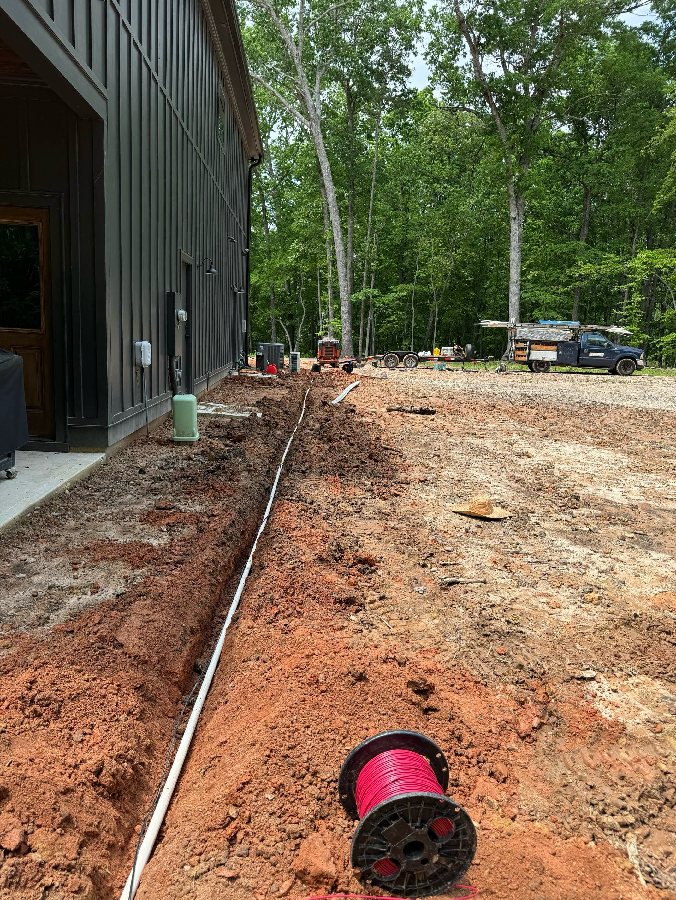
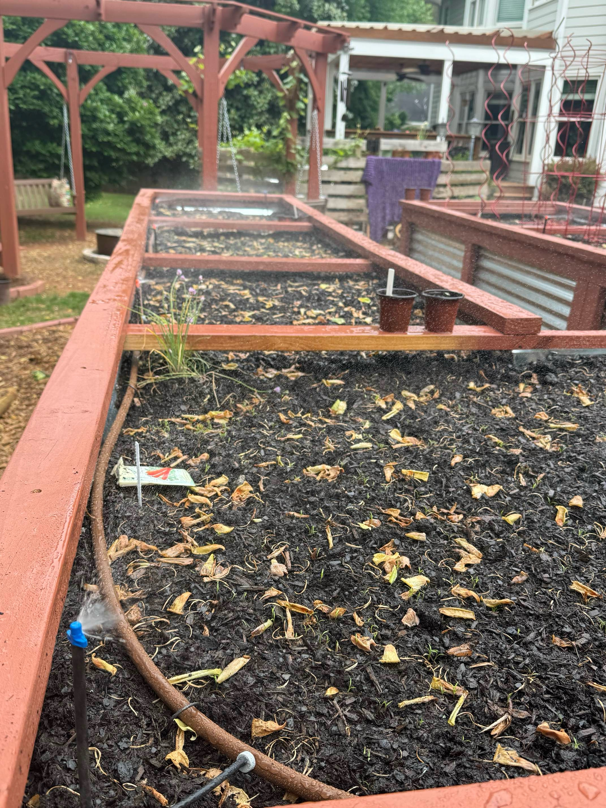
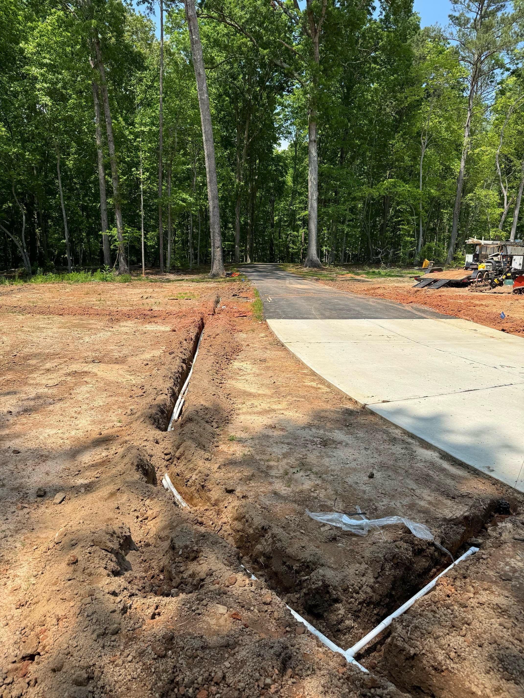

The Ultimate Guide to Finding the Best Irrigation Companies Near Me
Introduction
Maintaining a lush, vibrant landscape is a top priority for many homeowners and property owners. However, achieving this goal can be a challenge, especially in areas with unpredictable weather patterns or water scarcity. This is where a well-designed and properly functioning irrigation system becomes essential. Irrigation not only keeps your lawn, gardens, and landscaping thriving, but it also helps conserve water, reduce maintenance, and enhance the overall aesthetic of your property.
As an experienced property owner, I understand the importance of finding the right irrigation company to install, maintain, and optimize your system. In this comprehensive guide, I will walk you through the process of identifying and selecting the best irrigation companies near you, ensuring that your outdoor spaces receive the care and attention they deserve.
Why is it Important to Hire Professional Irrigation Companies?
Hiring a professional irrigation company offers numerous benefits that can save you time, money, and headaches in the long run. Here are some of the key reasons why you should consider working with a reputable irrigation company:
- Expertise and Experience: Irrigation companies employ trained technicians who have the knowledge and skills to design, install, and maintain irrigation systems that are tailored to your specific property and needs. They can identify potential issues, recommend the most efficient solutions, and ensure your system operates at its peak performance.
- Efficient Water Management: Professional irrigation companies can help you optimize your water usage, reducing waste and minimizing your environmental impact. They can implement smart technology, such as moisture sensors and weather-based controllers, to ensure your system only runs when necessary, ultimately saving you money on your water bills.
- Compliance with Local Regulations: Irrigation systems are often subject to various local codes and regulations. Hiring a professional company ensures that your system is installed and maintained in compliance with all relevant laws and guidelines, helping you avoid potential fines or issues down the line.
- Warranty and Ongoing Support: Reputable irrigation companies typically offer warranties on their work and provide ongoing maintenance and support services. This gives you peace of mind knowing that your investment is protected, and any issues that arise will be promptly addressed.
Factors to Consider When Searching for Irrigation Companies Near You
When it comes to finding the best irrigation companies in your local area, there are several key factors to consider. By taking the time to research and evaluate these elements, you can make an informed decision that will serve your property's needs for years to come.
- Licensing and Insurance: Ensure that the irrigation companies you're considering are properly licensed and insured. This protects you from liability and ensures that the work is performed by qualified professionals.
- Years of Experience: Look for companies with a proven track record of success, preferably with several years of experience in the industry. Experienced companies are more likely to have the knowledge and expertise to handle any challenges that may arise.
- Specialization and Services: Determine the specific services offered by each irrigation company, such as system design, installation, maintenance, and repair. Prioritize companies that specialize in the type of irrigation system you require, whether it's a sprinkler system, drip irrigation, or a combination of both.
- Reputation and Customer Satisfaction: Research the company's reputation by reading online reviews, checking their rating with the Better Business Bureau, and asking for references from past clients. A reputable company will have a history of satisfied customers and a commitment to quality workmanship.
- Warranty and Guarantees: Inquire about the warranties and guarantees offered by each irrigation company. This will give you an understanding of their confidence in their work and their commitment to customer satisfaction.
- Pricing and Financing Options: Compare the pricing and financing options available from different irrigation companies. While cost should not be the sole deciding factor, it's important to find a company that offers fair and transparent pricing, as well as flexible payment plans if needed.
By carefully considering these factors, you can confidently narrow down your search and identify the irrigation company that best meets your needs and budget.
Researching and Shortlisting Potential Irrigation Companies
The first step in finding the best irrigation company near you is to conduct thorough research. Start by compiling a list of potential companies in your local area. You can begin your search by:
- Asking for Referrals: Reach out to your neighbors, local landscaping companies, or even your homeowners' association for recommendations of reputable irrigation companies they have worked with or heard good things about.
- Searching Online: Utilize search engines, local business directories, and review sites to find irrigation companies serving your area. Pay attention to the companies' websites, social media presence, and online reviews to get a sense of their reputation and the quality of their services.
- Checking Professional Associations: Look for irrigation companies that are members of industry associations, such as the Irrigation Association or the American Society of Irrigation Consultants. These memberships can indicate a commitment to professionalism and ongoing education.
Once you have a list of potential companies, it's time to start narrowing down your options. Begin by reviewing the information you've gathered and creating a shortlist of the most promising candidates. Consider factors such as the company's specialties, years of experience, licensing and insurance, and overall reputation.
By taking the time to research and shortlist potential irrigation companies, you'll be well on your way to finding the best fit for your property's needs.
Evaluating the Reputation and Credibility of Irrigation Companies
Reputation and credibility are crucial factors when selecting an irrigation company. After compiling your shortlist, it's time to dig deeper and evaluate the reputation and credibility of each potential provider.
- Online Reviews and Ratings: Scour online review platforms, such as Google, Yelp, or the Better Business Bureau, to read what previous customers have to say about the irrigation companies on your list. Pay attention to both positive and negative reviews, looking for patterns and trends that can help you assess the overall quality of their services.
- Industry Memberships and Certifications: Check if the irrigation companies are members of professional associations, such as the Irrigation Association or the American Society of Irrigation Consultants. These memberships can indicate a commitment to industry standards and ongoing education.
- License and Insurance Verification: Ensure that the irrigation companies you're considering are properly licensed and insured. This protects you from liability and ensures that the work is performed by qualified professionals.
- References and Testimonials: Request references from the irrigation companies and follow up with past clients to get firsthand accounts of their experiences. This can provide valuable insights into the company's work quality, customer service, and overall reliability.
- Local Reputation and Community Involvement: Research the irrigation companies' involvement in the local community, such as sponsoring events or supporting charitable organizations. This can give you a sense of their commitment to the area and their dedication to being a reliable and trustworthy partner.
By thoroughly evaluating the reputation and credibility of each irrigation company on your shortlist, you can make an informed decision and have confidence that you're hiring a reliable and reputable provider.
Comparing the Services and Pricing of Different Irrigation Companies
Once you've narrowed down your list of potential irrigation companies, it's time to compare the services and pricing offered by each one. This step will help you identify the best value for your money and ensure that you're getting the services you need.
- Services Offered: Carefully review the range of services provided by each irrigation company. This may include system design, installation, maintenance, repair, and even ongoing monitoring and optimization. Determine which services are most important to you and prioritize companies that can meet your specific needs.
- Customization and Personalization: Assess the irrigation companies' ability to tailor their services to your property's unique requirements. Look for providers that offer custom solutions and are willing to work closely with you to develop a system that meets your specific needs.
- Warranty and Guarantees: Inquire about the warranties and guarantees offered by each irrigation company. This will give you an understanding of their confidence in their work and their commitment to customer satisfaction.
- Pricing and Payment Options: Compare the pricing structures of the irrigation companies on your list. Be sure to get detailed quotes that outline the cost of labor, materials, and any additional fees. Additionally, ask about any financing options or payment plans they may offer to help accommodate your budget.
- Timeliness and Responsiveness: Consider the irrigation companies' availability and responsiveness. Inquire about their turnaround times for scheduling, completing projects, and addressing any issues that may arise. Prompt and reliable service can be just as important as competitive pricing.
By carefully comparing the services and pricing of different irrigation companies, you can make an informed decision that balances your needs, budget, and the long-term value of the investment in your property.
Reading Customer Reviews and Testimonials
One of the most valuable sources of information when evaluating irrigation companies is the feedback and experiences of their past customers. Reading customer reviews and testimonials can provide valuable insights into the quality of the company's work, their customer service, and their overall reliability.
- Online Review Platforms: Start by searching for the irrigation companies on your shortlist on platforms like Google, Yelp, and the Better Business Bureau. Pay close attention to the overall rating, the number of reviews, and the content of the comments. Look for patterns in the feedback, both positive and negative, to get a well-rounded understanding of the company's performance.
- Company Websites: Many reputable irrigation companies feature customer testimonials and case studies on their own websites. These can offer a more in-depth look at the company's work and the satisfaction of their past clients.
- Social Media: Check the irrigation companies' social media pages, such as Facebook and Instagram, for any customer reviews or feedback that may be posted there. This can provide additional insights into the company's interactions with its clients.
- Personal Referrals: If you've received recommendations from friends, neighbors, or local professionals, follow up with those sources and ask about their experiences working with the irrigation companies. Personal referrals can be especially valuable in understanding the company's real-world performance.
- Red Flags: As you read through the customer reviews, be on the lookout for any recurring issues or complaints, such as poor workmanship, delayed service, or unresponsive customer support. These can be important indicators of a company's overall quality and reliability.
By thoroughly reviewing customer reviews and testimonials, you can gain a comprehensive understanding of the irrigation companies' track record and make a more informed decision about which provider is the best fit for your needs.
Requesting Quotes and Estimates from Shortlisted Irrigation Companies
After thoroughly researching and evaluating the irrigation companies on your shortlist, it's time to request quotes and estimates from the top contenders. This step will help you compare the costs and services offered by each provider, allowing you to make the most informed decision.
- Detailed Project Scope: Before reaching out to the irrigation companies, take the time to clearly define the scope of your project. This may include the size of your property, the type of irrigation system you require, any specific features or upgrades you're interested in, and any timeline or budget constraints you have.
- Request for Quotes: Contact the irrigation companies on your shortlist and request detailed quotes for the services you need. Be sure to provide them with the project scope you've outlined, and ask them to include a breakdown of labor, materials, and any additional fees or charges.
- In-Person Consultations: Many reputable irrigation companies offer free on-site consultations to assess your property and provide a customized quote. Take advantage of these opportunities to meet with the companies, ask questions, and get a better understanding of their approach and expertise.
- Comparison of Quotes: Once you've received quotes from the various irrigation companies, carefully compare the pricing, services, and any warranties or guarantees they offer. This will help you identify the best value for your money and ensure that you're getting the level of quality and service you expect.
- Negotiation and Clarification: If you notice significant price discrepancies or have any questions about the quotes, don't hesitate to reach out to the irrigation companies for clarification or to negotiate the terms. A reputable provider will be transparent and willing to work with you to find a solution that meets your needs.
By requesting detailed quotes and estimates from your shortlisted irrigation companies, you can make a well-informed decision that balances your budget, your property's needs, and the long-term value of the investment in your irrigation system.
Checking for Licenses, Insurance, and Warranties
When selecting an irrigation company, it's crucial to ensure that they are properly licensed, insured, and offer comprehensive warranties on their work. These factors not only protect you as the customer but also demonstrate the company's commitment to quality and customer satisfaction.
- License Verification: Confirm that the irrigation companies you're considering are properly licensed to operate in your local area. This may involve checking with your state or local licensing authorities to verify their credentials.
- Insurance Coverage: Inquire about the irrigation companies' insurance policies, including general liability and workers' compensation coverage. This will protect you from potential liabilities in the event of accidents or damage during the installation or maintenance of your irrigation system.
- Warranty Coverage: Ask the irrigation companies about the warranties they offer on their work, including the duration and the specific components or services covered. A reputable provider should stand behind their workmanship and offer a robust warranty to give you peace of mind.
- Warranty Transferability: Find out if the irrigation company's warranties are transferable to new homeowners, should you decide to sell your property in the future. This can add value and appeal to potential buyers.
- Warranty Exclusions: Review the fine print of the warranty to understand any exclusions or limitations that may apply. This will help you avoid any surprises or disappointments down the line.
By thoroughly vetting the licenses, insurance, and warranties offered by the irrigation companies on your shortlist, you can ensure that you're working with a reliable and trustworthy provider who stands behind the quality of their work.
Interviewing and Asking Questions to Potential Irrigation Companies
Once you've narrowed down your list of potential irrigation companies, it's time to schedule interviews and ask questions to gain a deeper understanding of their capabilities, approach, and customer service. This step will help you make a more informed decision and ensure that you're hiring the best company for your needs.
- Company Background and Experience: Start by asking about the irrigation company's history, the number of years they've been in business, and their specific areas of expertise. This will give you a sense of their overall experience and credibility.
- Project Approach and Methodology: Inquire about the company's process for designing, installing, and maintaining irrigation systems. Ask them to walk you through their step-by-step approach and how they tailor their solutions to the unique needs of each property.
- Customer Service and Communication: Evaluate the company's commitment to customer service by asking about their communication practices, their responsiveness to inquiries, and their approach to addressing any issues or concerns that may arise during the project.
- Professional Certifications and Memberships: Inquire about the certifications and industry memberships held by the irrigation company's technicians. This can indicate their dedication to ongoing education and adherence to industry best practices.
- References and Case Studies: Request references from past clients and ask the company to provide case studies or examples of similar projects they've completed. This will give you a better understanding of their track record and the quality of their work.
- Warranty and Guarantees: Discuss the company's warranty policies, including the coverage, duration, and any exclusions or limitations. Understand their commitment to standing behind their work and providing ongoing support.
- Scheduling and Availability: Inquire about the company's availability and their typical turnaround times for scheduling, project completion, and addressing any issues that may arise during or after the installation.
By thoroughly interviewing the irrigation companies and asking the right questions, you can gain valuable insights that will help you make the best decision for your property and your long-term satisfaction.
Making the Final Decision and Hiring the Best Irrigation Company
After carefully researching, evaluating, and interviewing the irrigation companies on your shortlist, it's time to make the final decision and hire the best provider for your needs. This step involves synthesizing all the information you've gathered and weighing the various factors to choose the company that offers the highest quality of service, the best value, and the greatest peace of mind.
- Evaluate the Overall Fit: Consider how well each irrigation company aligns with your specific requirements, such as the size and layout of your property, your budget, and your desired level of customization and ongoing support.
- Assess the Company's Expertise and Reputation: Review the information you've gathered about the companies' licenses, insurance, warranties, and customer feedback. Prioritize the providers with a proven track record of quality workmanship, reliable service, and a strong reputation in the industry.
- Compare the Pricing and Value: Carefully analyze the quotes and estimates you've received, looking for the best balance of competitive pricing and the comprehensive services and guarantees offered by each company.
- Trust Your Instincts: In addition to the objective factors, consider how you felt during the interactions with each irrigation company. A good rapport and a sense of trust can be invaluable when embarking on a long-term partnership.
- Make the Final Selection: Once you've thoroughly evaluated all the relevant information, make your final decision and choose the irrigation company that you believe will provide the best overall experience and long-term value for your property.
Don't settle for anything less than the best when it comes to your irrigation system. Contact the top-rated irrigation companies near you today to schedule a free consultation an Conclusion: Enjoying the Benefits of a Well-Maintained Irrigation System
With the right irrigation company by your side, you can look forward to a lush, thriving landscape that not only enhances the beauty of your property but also provides numerous practical benefits. A well-designed and properly maintained irrigation system can:
- Conserve Water: By using smart technology and efficient watering practices, a professional irrigation company can help you minimize water waste and reduce your environmental impact.
- Promote Healthy Plant Growth: Consistent and targeted watering ensures that your lawn, gardens, and landscaping receive the optimal amount of moisture, leading to vibrant, healthy plants.
- Increase Property Value: A well-maintained irrigation system can be a valuable asset, adding curb appeal and increasing the overall value of your property.
- Reduce Maintenance Costs: Automated irrigation systems can save you time and money by minimizing the need for manual watering and reducing the risk of damage to your landscaping.
- Provide Year-Round Enjoyment: With a properly functioning irrigation system, you can enjoy your outdoor spaces throughout the seasons, without worrying about the impact of changing weather patterns.
By entrusting your irrigation needs to a reputable and experienced company, you can sit back and relax, knowing that your property is in good hands. The investment you make in a high-quality irrigation system will pay dividends for years to come, both in terms of the aesthetic appeal of your landscape and the practical benefits it provides.
Don't wait any longer to transform your outdoor spaces. Contact Vergel irrigation today to schedule a free consultation and take the first step towards a lush, thriving landscape.